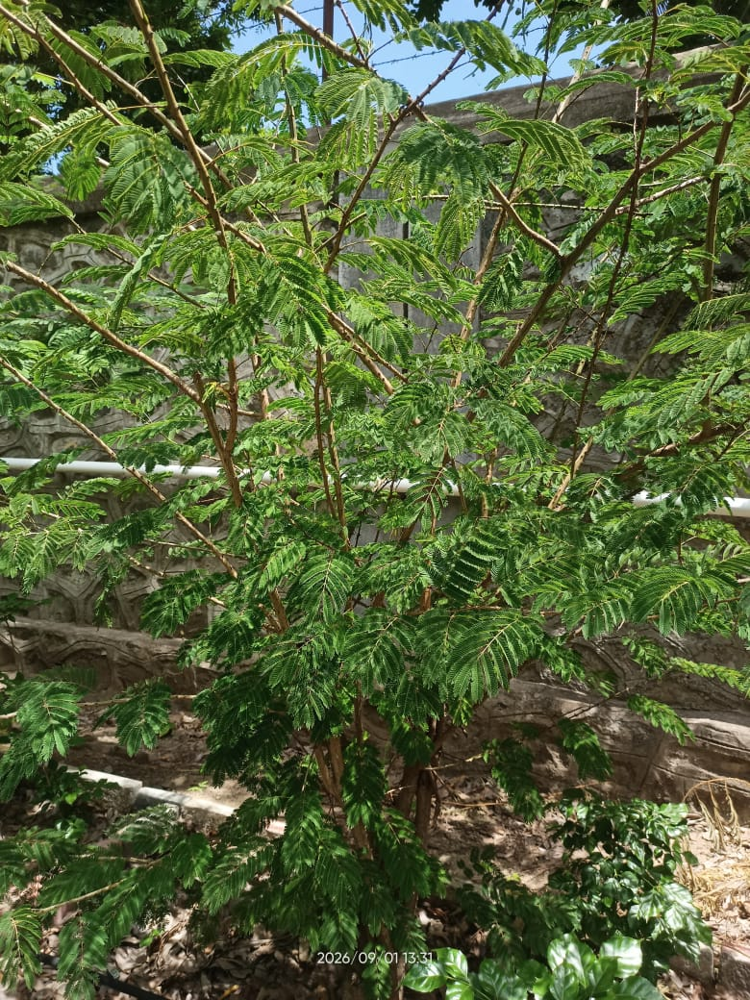

Botanical Garden Management System

Botanical Name: Prosopis cineraria (L.)Druce
Common Name: Shami / Khejri
Family: Fabaceae
Shami is a small thorny tree commonly found in dry and arid regions of India. It has small green leaves and is well adapted to hot and dry conditions.
Shami is an important plant in Indian culture and is also valued for its ability to grow in dry conditions.